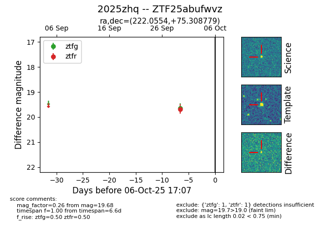

FINK: ZTF25abufwvz
Lasair: ZTF25abufwvz
ALeRCE: ZTF25abufwvz
TNS: 2025zhq
YSE: 2025zhq
ZTF25abufwvz (ztf,fink)
2025zhq (tns,yse)
equatorial (ra, dec) = (222.0554,+75.30878)
galactic (l, b) = (113.6859,+39.65110)

last ztfg=19.64, ztfr=19.68
1 ztfg, 1 ztfr detections